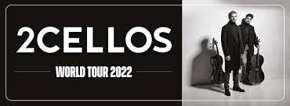

THE 2CELLOS

I 2Cellos sono un duo di violoncellisti croato/sloveno formato nel 2011 e composto da Luka Sulic e Stjepan Hauser .
Provenienti entrambi dal panorama musicale classico, nel 2011 formano il duo arrangiando brani di musica contemporanea in chiave moderna, utilizzando solamente i loro due violoncelli per le esecuzioni. Nel gennaio dello stesso anno pubblicano un video musicale su YouTube in cui eseguono il brano di Michael Jackson Smooth Criminal diventando un vero e proprio fenomeno del web. Sempre nel 2011, il brano esce come singolo, seguito da un altro singolo Welcome to the Jungle, cover dei Guns N' Roses estratti dal loro primo album e disponibili entrambi in download digitale.
Il gruppo arriva all'attenzione di Elton John che li invita ad esibirsi con lui nel tour mondiale del 2011, comprese le uniche tre date italiane dello stesso anno.
Il duo ha all'attivo quattro album, 2Cellos, In2ition, Celloverse e Score, pubblicati dalla Sony Music. I dischi contengono cover di Michael Jackson, Guns N' Roses, U2, Nine Inch Nails, Sting, Coldplay, AC/DC, Nirvana, Muse, Kings of Leon, Bon Jovi, ecc. Il quarto album Score è invece dedicato alle colonne sonore. Mentre un EP, iTunes Festival: London 2011, pubblicato il 25 luglio 2011 esclusivamente su iTunes, contiene cinque brani registrati dal vivo.
Nel 2021, a dieci anni dalla fondazione, annunciano di volersi dividere, dopo aver intrapreso l’ultimo tour mondiale nel 2022.
